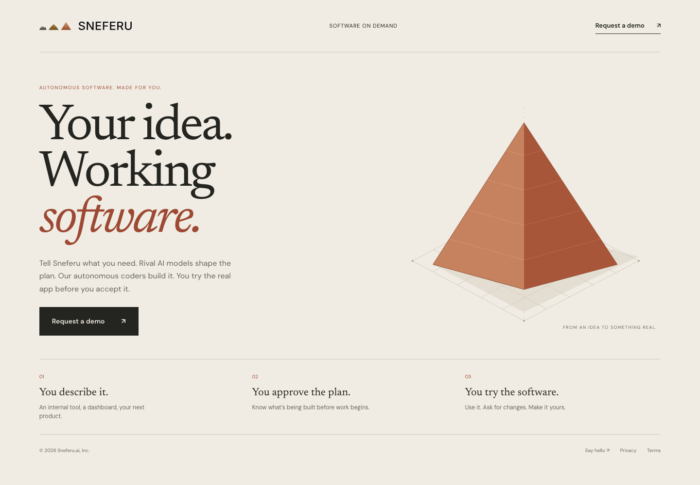
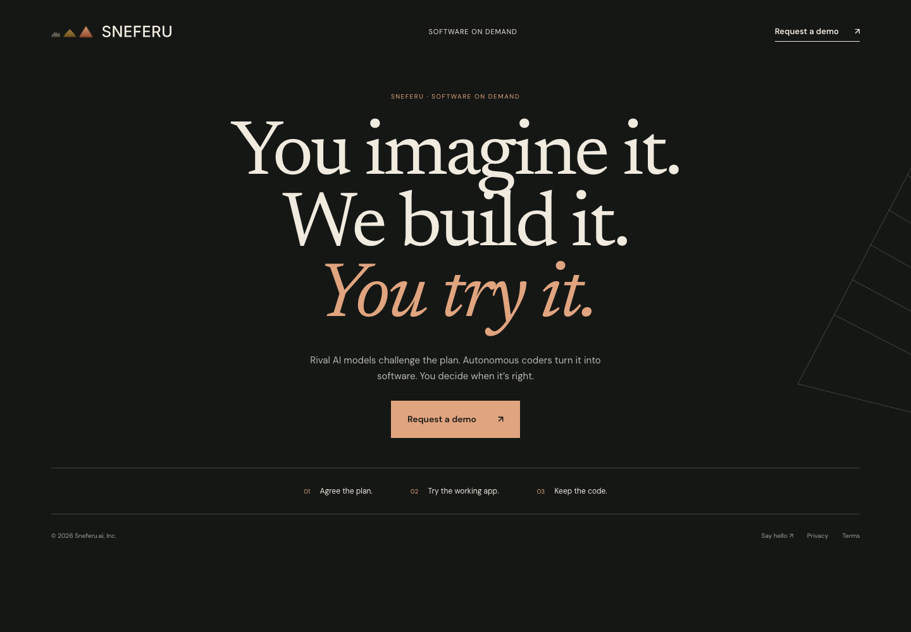
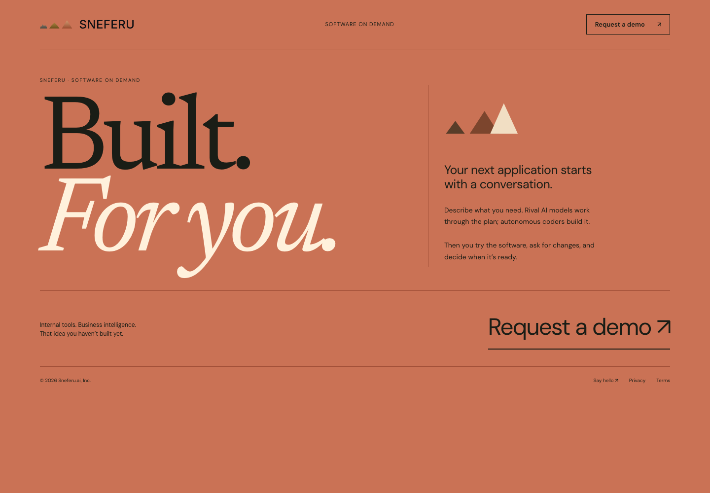
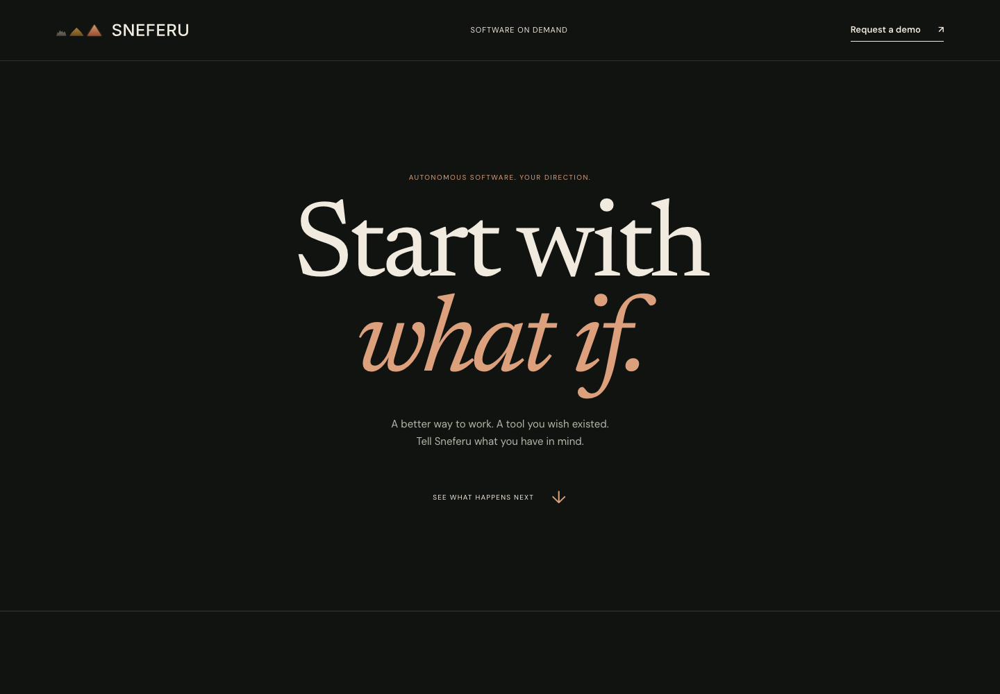
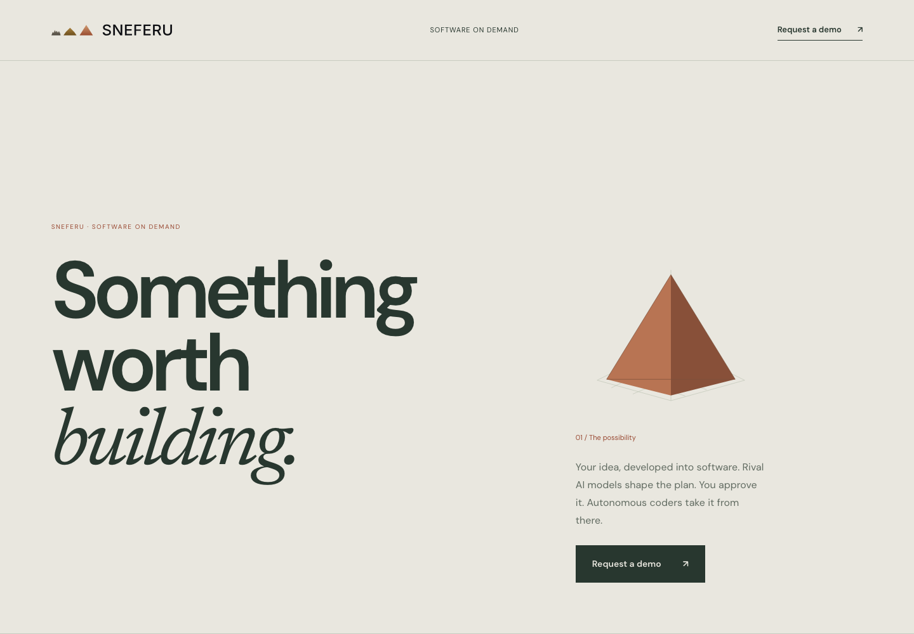

01Limestone
Static · RecommendedWarm, direct, and quietly confident. A short introduction with three simple steps.
Explore Limestone ↗Less explanation. More curiosity.
One short story. Five distinct treatments.
Three compact pages and two scrolling options.
Open each one and try the demo button.

Warm, direct, and quietly confident. A short introduction with three simple steps.
Explore Limestone ↗
The shortest version. One promise, one button, room to breathe.
Explore Night ↗
A memorable brand poster. Copper, oversized type, and a direct invitation.
Explore Copper ↗
A brief journey from idea to working software. One pyramid takes shape as you scroll.
Explore The short story ↗
Three bold chapters. The idea, the working app, and a conversation.
Explore In your hands ↗